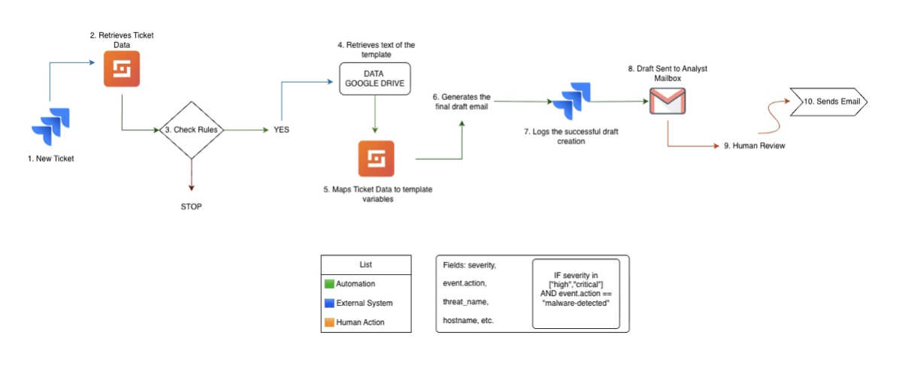

CONTRIBUTION
What I owned
The workflow addresses repetitive case communication while retaining a human review step before a notification is sent.
CASE STUDY [05] // SECURITY AUTOMATION
Designed and documented a Shuffler automation workflow that prepares malware notification drafts from Jira case data for analyst review.
CONTRIBUTION
The workflow addresses repetitive case communication while retaining a human review step before a notification is sent.
The documented flow starts with a malware case in Jira, extracts the fields needed for the notification, applies a template, and prepares a draft for review.
The design connects case data, templates, and the analyst’s email workflow. Supporting documentation explains the architecture, field mapping, and an example use case.
The intended output is a draft rather than an automatically sent message. An analyst checks the content and context before deciding to send it.
WORKFLOW DIAGRAM

The illustrated condition selects high or critical severity tickets with a malware-detected event action. Matching tickets are mapped to a Google Drive template; the resulting draft is logged in Jira and delivered to the analyst’s mailbox.
DELIVERABLES